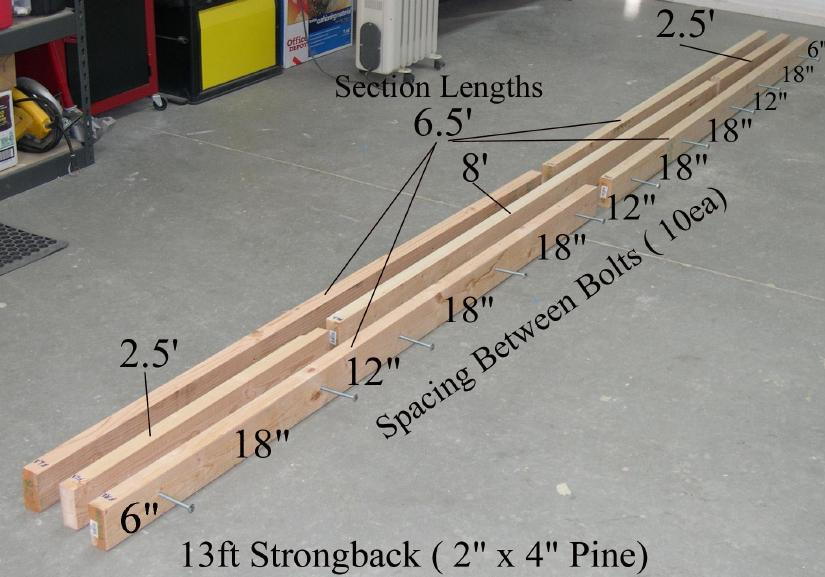

| Strongback - Layout Construction | Menu Previous Page Next Page |
|

The strongback is constructed using 39 linear feet of 2x4 lumber (1.5" x 3.5") Cut the boards based on the lengths shown in the photo above. Lay out the sections on the floor or work table as shown. Mark the location of the carriage bolts based on the photo. Not shown is the 1x6 top plate (7ft and 6ft sections)
|
|